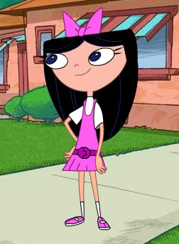
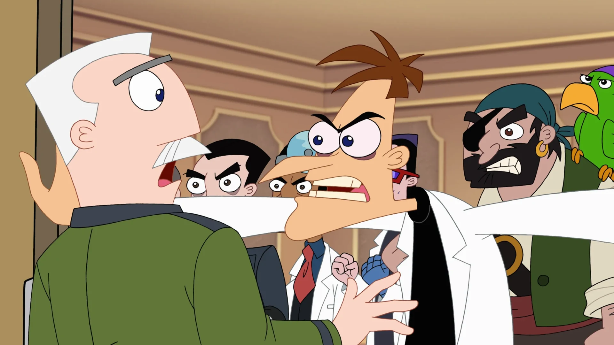
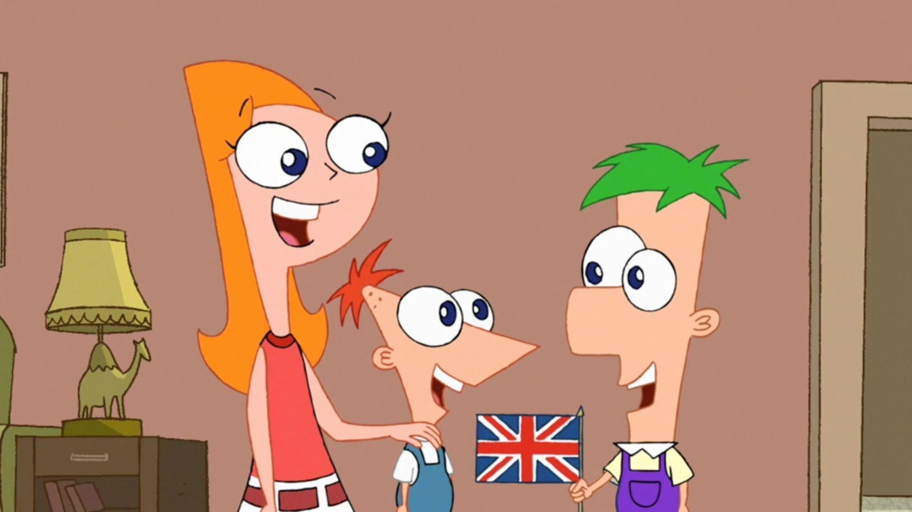

Temporada 4
¡El gran final y más sorpresas!
Año: 2012-2015
Episodios: 30
Canal: Disney Channel
Episodios: 30
Canal: Disney Channel
La cuarta y última temporada trae el desenlace de la serie, con episodios especiales, reencuentros y el cierre de muchas historias. Los inventos siguen sorprendiendo y la diversión no termina hasta el último capítulo.
Momentos inolvidables

El episodio final: "Last Day of Summer".

Perry revela su identidad a la familia.

Candace finalmente disfruta el verano con sus hermanos.